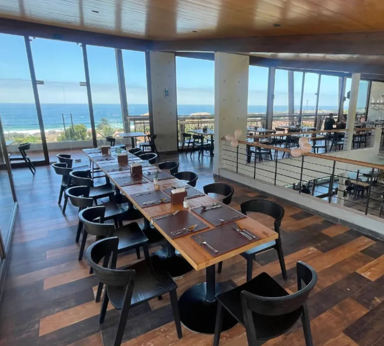
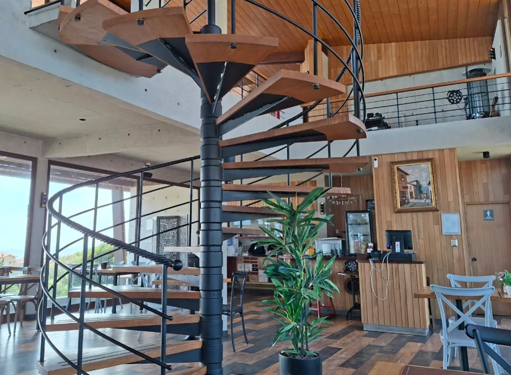

Ceviche mixto
Pescado y mariscos frescos en leche de tigre, con cebolla morada, cancha, choclo y camote.
El Quisco · Litoral de Valparaíso
Pescados, mariscos y sabores peruano-chilenos, servidos con vista panorámica al Pacífico. Un león dormido sobre las rocas de El Quisco.


Nuestra casa
La Roca nació frente al mar de El Quisco: dos pisos de madera, concreto y grandes ventanales donde la vista es parte del menú. Arriba, la terraza recibe el sol y la brisa; abajo, un comedor cálido y acogedor.
Cocinamos pescados y mariscos frescos con la sazón del Perú y el corazón de Chile. Buen café, cócteles preparados con cariño y, cuando cae la tarde, música en vivo.
De nuestra cocina
Una selección de la carta. El menú completo te espera en el local.
Pescado y mariscos frescos en leche de tigre, con cebolla morada, cancha, choclo y camote.
Trozos de res salteados al wok con su punto justo, jugosos, sobre una cama de tallarín.
Gratinadas al horno con queso y un toque de limón. Un clásico del litoral, bien servido.
Arroz salteado al estilo nikkei, con verduras crocantes y el wok bien caliente.
A la plancha, fresco del día, con hierbas y guarnición. Simple y perfecto frente al mar.
Cremoso y gratinado en su cazuela, con toda la intensidad del mar chileno.
El lugar
Lo que dicen
"Los pescados y mariscos estaban frescos, las porciones generosas y la atención muy amable. Un lugar muy recomendable para disfrutar buena comida frente al mar."
Reseña de Google · hace 3 meses
"Es un león dormido: tiene una vista increíble y privilegiada, la comida es de primer nivel y la atención de 5 estrellas. Un imperdible del litoral."
Javiera · hace un año
"Excelente lugar, precioso, amplio, buena atención, tragos hechos con cariño, ambiente y rica comida. Nos encantó, volveremos."
Reseña de Google · hace 5 meses
"Muy buena experiencia, vista al mar. Precios accesibles para la calidad del lugar. El lomo saltado, contundente."
Reseña de Google · hace un mes
Visítanos
| Domingo | 12:30 – 18:00 |
|---|---|
| Lunes | 12:30 – 20:00 |
| Martes | 12:30 – 20:00 |
| Miércoles | 12:30 – 20:00 |
| Jueves | 12:30 – 20:00 |
| Viernes | 12:30 – 03:00 |
| Sábado | 12:30 – 03:00 |
viernes y sábado la fiesta sigue hasta las 3 de la madrugada.
Av. Isidoro Dubournais N°421, Loc F
El Quisco, Región de Valparaíso